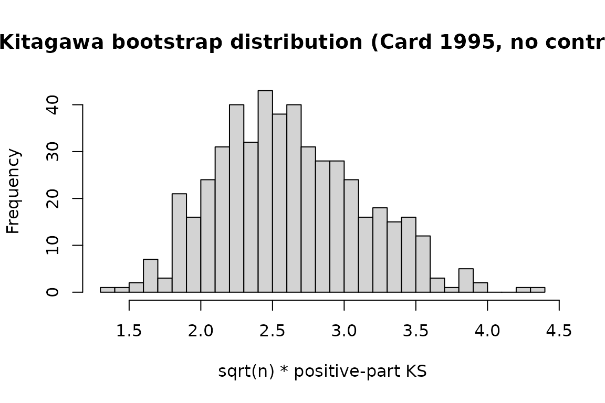

Why this vignette matters
fixest is the dominant R package for applied IV
estimation. This vignette shows the drop-in integration: fit an IV model
with feols(), pass it to iv_check(), and get
every applicable IV-validity test in one call.
If you are already using fixest for your paper, nothing
about your workflow changes. Add one line and your IV estimate now comes
with a published falsification test.
The Card (1995) proximity-to-college IV
Card’s (1995) classic IV for the return to schooling uses proximity
to a four-year college as an instrument for completed schooling. The
bundled card1995 dataset is a cleaned extract from the
National Longitudinal Survey of Young Men.
data(card1995)
head(card1995[, c("lwage", "educ", "college", "near_college",
"age", "black", "south")])
#> lwage educ college near_college age black south
#> 1 6.306275 7 0 0 29 1 0
#> 2 6.175867 12 0 0 27 0 0
#> 3 6.580639 12 0 0 34 0 0
#> 4 5.521461 11 0 1 27 0 0
#> 5 6.591674 12 0 1 34 0 0
#> 6 6.214608 12 0 1 26 0 0Two variants are included: the continuous educ (years of
schooling) and a binary college indicator
(educ >= 16) for use with tests that require a binary
treatment.
The unconditional case: no exogenous controls
We start with the simplest specification: no exogenous controls in
the structural equation. This is the case iv_kitagawa() is
designed for.
m_uncond <- feols(
lwage ~ 1 | college ~ near_college,
data = card1995
)
summary(m_uncond)
#> TSLS estimation: Second stage
#> |- D.V. : lwage
#> |- Endo. : college
#> |- Instr. : near_college
#> Dep. Var.: lwage
#> Observations: 3,003
#> Standard-errors: IID
#> Estimate Std. Error t value Pr(>|t|)
#> (Intercept) 5.65161 0.155590 36.32367 < 2.2e-16 ***
#> fit_college 2.24687 0.568671 3.95109 7.9588e-05 ***
#> ---
#> Signif. codes: 0 '***' 0.001 '**' 0.01 '*' 0.05 '.' 0.1 ' ' 1
#> RMSE: 0.996225 Adj. R2: 0.02591
#> F-test (1st stage), college: stat = 15.589, p = 8.052e-5, on 1 and 3,001 DoF.
#> Wu-Hausman: stat = 68.919, p < 2.2e-16 , on 1 and 3,000 DoF.
chk <- iv_check(m_uncond, n_boot = 500, parallel = FALSE)
print(chk)
#>
#> ── IV validity diagnostic ──────────────────────────────────────────────────────
#> Kitagawa (2015): stat = "5.25", p = "0", reject
#> Mourifie-Wan (2017): stat = "5.25", p = "0", reject
#> Overall: at least one test rejects IV validity at 0.05.iv_check() inspects the model, detects that
college is binary and near_college is a
discrete instrument, and runs Kitagawa (2015) and Mourifie-Wan (2017).
With no covariates the two are numerically identical (Mourifie-Wan
reduces exactly to the variance-weighted Kitagawa test,
unit-tested).
Bootstrap distribution
k <- iv_kitagawa(m_uncond, n_boot = 500, parallel = FALSE)
hist(k$boot_stats, breaks = 40,
main = "Kitagawa bootstrap distribution (Card 1995, no controls)",
xlab = "sqrt(n) * positive-part KS")
abline(v = k$statistic, col = "red", lwd = 2)
The conditional case: one exogenous control
Card’s identification strategy is more naturally read as “valid
conditional on demographic and regional controls”. In that
setting the right test is Mourifie and Wan’s (2017) conditional version:
same testable family of inequalities as Kitagawa, but the conditional
CDFs are estimated by series regression on X rather than
treated as unconditional.
In ivcheck v0.1.2, the conditional path supports a
single covariate (multivariate via tensor-product basis is planned for
v0.2.0).
m_cond <- feols(
lwage ~ age | college ~ near_college,
data = card1995
)iv_kitagawa() is strictly the unconditional test and
refuses fitted models that carry controls:
iv_kitagawa(m_cond, n_boot = 100, parallel = FALSE)
#> Error in `abort_if_controls_present()`:
#> ! `iv_kitagawa()` is the unconditional Kitagawa (2015) test; it does not
#> condition on controls.
#> ✖ Your fitted model has 1 exogenous control(s): 'age'.
#> ℹ Use `iv_mw()` on the same model for the conditional Mourifie-Wan (2017) test.
#> ℹ To force the unconditional test on these data, call `iv_kitagawa()` on raw
#> `(y, d, z)` vectors.The conditional test is iv_mw(). Dispatched on the same
fitted model, it picks up the single covariate automatically and runs
the Chernozhukov-Lee-Rosen series-regression test with Andrews-Soares
adaptive moment selection:
mw <- iv_mw(m_cond, n_boot = 200, parallel = FALSE)
print(mw)
#>
#> ── Mourifie-Wan (2017) ─────────────────────────────────────────────────────────
#> Sample size: 3003
#> Statistic: "79.5", p-value: "0.675"
#> Verdict: cannot reject IV validity at 0.05iv_check() does the right thing automatically: it
detects that the model has controls, drops Kitagawa from the applicable
list with an informational message, and reports MW alone:
iv_check(m_cond, n_boot = 200, parallel = FALSE)
#> ℹ Kitagawa test skipped: fitted model has exogenous controls and
#> `iv_kitagawa()` is unconditional.
#> ℹ The conditional Mourifie-Wan test is the right object here.
#>
#>
#> ── IV validity diagnostic ──────────────────────────────────────────────────────
#>
#> Mourifie-Wan (2017): stat = "79.5", p = "0.695", pass
#>
#> Overall: cannot reject IV validity at 0.05.Multivariate controls
When the structural equation carries more than one exogenous control,
iv_mw() in v0.1.2 does not yet support the multivariate
conditioning required for a valid conditional test. Both Kitagawa and MW
are skipped, and iv_check() reports back with informational
messages:
m_multi <- feols(
lwage ~ age + black + south | college ~ near_college,
data = card1995
)
iv_check(m_multi, n_boot = 100, parallel = FALSE)
#> ℹ Kitagawa test skipped: fitted model has exogenous controls and
#> `iv_kitagawa()` is unconditional.
#> ℹ The conditional Mourifie-Wan test is the right object here.
#> ℹ Mourifie-Wan test skipped: multivariate `X` (>1 control) is not yet supported
#> in v0.1.2.
#> ℹ Planned for v0.2.0 via tensor-product series basis.
#> ℹ Workaround: reduce `X` to a single propensity index and call `iv_mw()`
#> directly.
#> Error in `iv_check()`:
#> ! Could not detect an applicable IV-validity test for this model.
#> ℹ The model does not appear to be an IV model, or the treatment is not binary.
#> ℹ Supported: `fixest::feols()` with formula `y ~ x | d ~ z` or
#> `ivreg::ivreg()`.Multivariate conditioning via tensor-product series basis is planned for v0.2.0. Until then, two workarounds:
-
Reduce
Xto a single index. Fit a propensity scorePr(D = 1 | X)or another scalar summary of the controls, then refit the IV model with that index as the single exogenous control and calliv_mw()on the result. -
Stratify and run unconditional tests within strata.
Coarsely bin
Xand calliv_kitagawa()on raw vectors within each cell, applying a Bonferroni adjustment across cells.
Combining with modelsummary
If you have modelsummary installed,
iv_check results are picked up automatically through
broom::glance registered on package load. This lets you put
a validity p-value directly in a regression table footer:
library(modelsummary)
modelsummary(
list("IV estimate" = m_cond),
gof_custom = list(
"Mourifie-Wan 2017 p-value" = sprintf("%.3f", mw$p_value)
)
)The full workflow
In your paper’s replication code:
library(fixest)
library(ivcheck)
# ... data loading ...
# IV estimate (conditional on a single control)
m <- feols(y ~ x | d ~ z, data = df)
# IV validity diagnostic
chk <- iv_check(m)
# Report both in the paper
knitr::kable(chk$table)Three lines of code, a falsification test the referee is almost
guaranteed to ask about, and a citation-ready result. That is the whole
point of ivcheck.
References
Card, D. (1995). Using Geographic Variation in College Proximity to Estimate the Return to Schooling.
Kitagawa, T. (2015). A Test for Instrument Validity. Econometrica 83(5): 2043-2063.
Mourifie, I. and Wan, Y. (2017). Testing Local Average Treatment Effect Assumptions. Review of Economics and Statistics 99(2): 305-313.